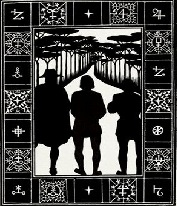
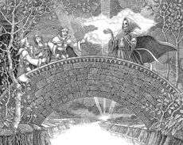

The Tale of the Three Brothers

Three brothers, travelling along a lonely,
winding road at
twilight reached a deep treacherous river where anyone who attempted to swim or wade
would drown.
Learned in the magical arts, the brothers conjured a bridge with
their wands and proceed to cross.
Halfway though the bridge, a hooded figure stood before them.
The figure was the enraged spirit of Death, cheated of his due.
Death cunningly pretended to congratulate
them and proceeds to award them with gifts of their own choosing.
The eldest brother, a combative man, asked for a wand more powerful than any in existence.
Death granted his wish by fashioning the Elder Wand from a branch of a nearby elder tree
standing on the banks of the river. The second brother, an arrogant man,
chose to further humiliate death, and asked for the power to recall the
deceased from the grave.
Death granted his wish by crafting the
Resurrection Stone from a stone picked from the riverbank.
The third and youngest brother,
who was the most humble and wise,
did not trust Death and asked for something to
enable him to go forth without Death being able to follow.
A reluctant Death,
most unwillingly, handed over his own Invisibility cloak.
The three brothers took their prizes and soon went on their separate ways.
The eldest brother travelled to a village where a wizard whom he had quarrelled lived.
He sought out a duel and fought the wizard using the wand, instantly killing the latter.
Leaving his enemy dead upon the floor, the eldest brother walked to an inn not far from
the duelling site and spent the night there.
Taken by his conscience and
lust of the Elder Wand's power,
the eldest brother boasted of this wand gifted
by Death and his own invincibility.
That very night, Death transfigured to a murderous wizard.
The unknown murderous wizard crept to the inn as the eldest brother slept,
drunk from wine. The wizard slit the oldest brother’s throat
for good measure and stole the wand.
That was when Death took the first brother.
The second brother returned to his home where he lived alone.
Turning the stone thrice in his hand the figure of the girl he had once hoped to marry,
before her untimely death, appeared at once before him, much to his delight.
Yet she was sad and cold, separated from him as by a veil.
Though she had returned to the mortal world, she did not truly belong there and suffered.
Finally, the second brother, driven mad with hopeless longing,
committed suicide by hanging from his house' balcony so as truly to join her.
That was when Death took the second brother for his own.
Death searched for the youngest brother as years passed but never succeeded.
It was only when the third brother reached a great age,
he took off the Cloak of Invisibility and gave it to his son.
Greeting Death as an old friend, they departed this life as equals.

Hello